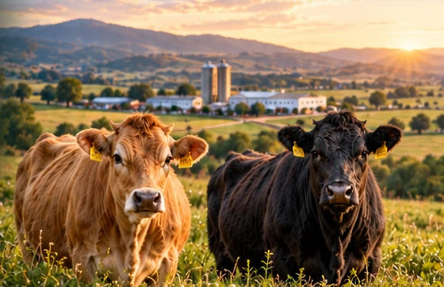
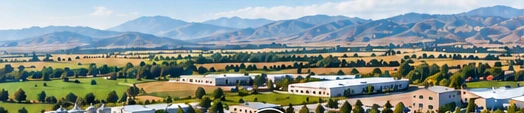
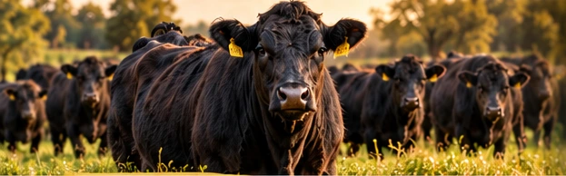

Doğadan sofranıza
Doğal Üretim.
Güvenilir Lezzet.
Afyon’un bereketli topraklarında, doğaya ve hayvan refahına saygılı üretim anlayışıyla sofralarınıza sağlıklı ve kaliteli ürünler sunuyoruz.
Ürünlerimizi Keşfedin
Doğal Üretim
Doğaya saygılı tarım ve hayvancılık.
Hayvan Refahı
Hayvanların sağlığına ve huzuruna özen.
Yüksek Kalite
Üretimin her adımında kalite anlayışı.
Güvenilir Tedarik
Sofranıza uzanan güvenilir bir yol.
Doğadan sofranıza
Ürünlerimiz
Kendi tesislerimizde, doğaya saygılı üretim anlayışıyla sofralarınıza uzanan lezzetler.
Tüm Ürünlerimizi Gör
Tesislerimizi KeşfedinGüçlü altyapı, sürdürülebilir gelecek
ETAŞ AFYON
Tarım & Hayvancılık
Afyon’un bereketli topraklarında, doğaya duyduğumuz saygıyı ve hayvan refahını ön planda tutan üretim anlayışıyla çalışıyoruz. Yumurta, Jersey sütü, Angus et ve gebe düve ürünlerimizle üretimin her adımına özen gösteriyoruz.

Geleceğe birlikte yatırım
Angus Gebe Düve Satışı
Hayvancılık yatırımlarınız için Angus gebe düvelerimizi keşfedin. Satış ve ürün bilgileri için bizimle iletişime geçin.
Satış ve Bilgi İçin İletişime GeçToprağımızdan gelen güç
Üretimin kalbi, Afyon.
Tarım ve hayvancılığı bir araya getiren tesislerimizde, doğaya ve hayvanlara duyduğumuz saygı üretim yaklaşımımızın temelini oluşturur.
İletişim
Sofranız için.
İşletmeniz için.
Ürünlerimiz, tedarik ve Angus gebe düve satışı hakkında bilgi alın.
Afyonkarahisar / Türkiye
Telefon ve WhatsApp iletişim bilgileri yakında burada.
Ürünlerimizi inceleyin